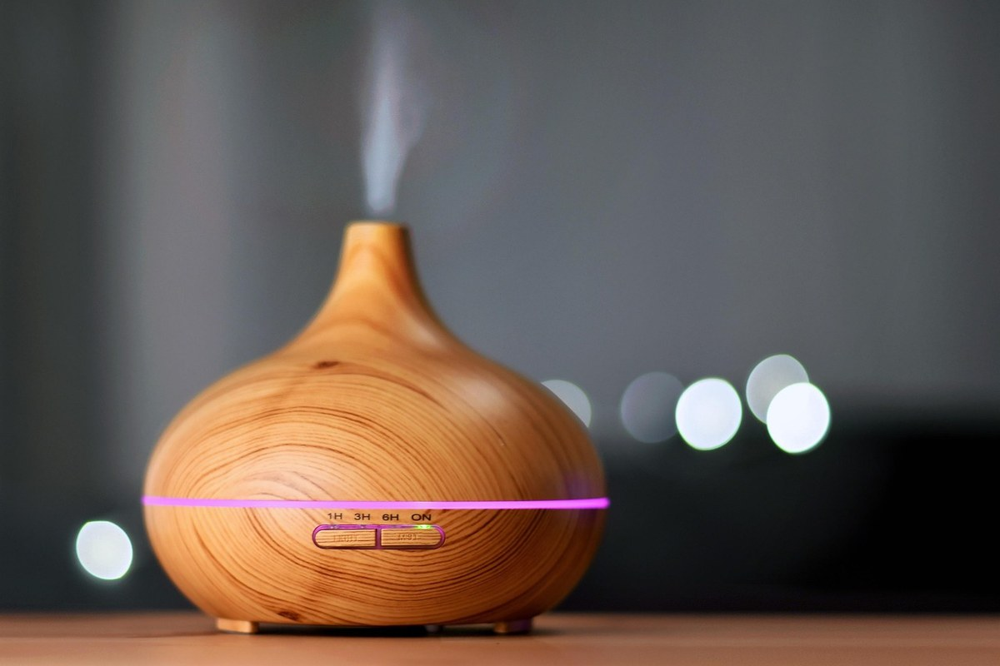
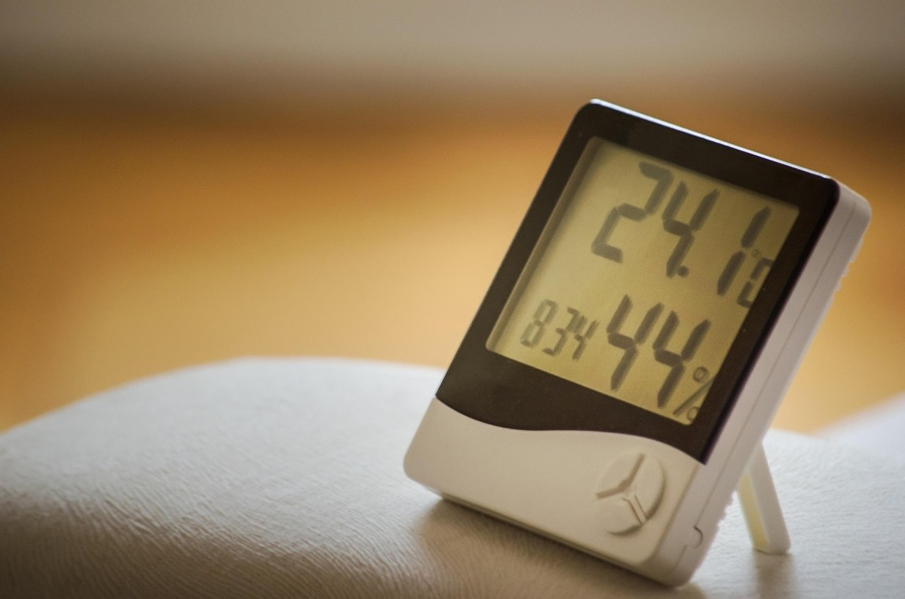

이 포스팅은 쿠팡 파트너스 활동의 일환으로, 이에 따른 일정액의 수수료를 제공받습니다.
[사진 1: 썸네일]
아침에 일어나면 목이 칼칼하고, 빨래는 하루 만에 바싹 마르는 계절이 왔어요. 이맘때 가장 많이 고민하는 살림템이 바로 가습기예요.
그런데 막상 사려고 보면 초음파식, 가열식, 기화식, 복합식까지 종류가 너무 많죠. 오늘은 가습기 고르는 법을 방식별 차이부터 체크리스트까지 한 번에 정리해 드릴게요.
[사진 2]
가습기는 물을 공기 중으로 보내는 '방식'에 따라 관리 방법, 전기요금, 소음, 위생이 크게 달라져요.
디자인이나 가격보다 먼저 우리 집 상황에 맞는 방식을 정하면 실패할 확률이 확 줄어요.
가장 많이 쓰는 세 가지 방식을 표로 정리했어요. 복합식은 물을 한 번 데운 뒤 초음파로 내보내는 방식으로, 초음파식과 가열식의 중간 정도라고 보면 돼요.
| 구분 | 초음파식 | 가열식 | 기화식 |
|---|---|---|---|
| 원리 | 진동으로 물을 잘게 쪼개 분사 | 물을 끓여 수증기로 내보냄 | 젖은 필터에 바람을 통과시킴 |
| 장점 | 저렴하고 조용함, 가습량 많음 | 끓인 수증기라 위생적 | 과가습이 적고 전기요금 낮음 |
| 단점 | 물때·세균 관리가 중요함 | 전기요금이 높고 뜨거움 | 가습량이 적고 필터 관리 필요 |
| 잘 맞는 집 | 자주 세척할 수 있는 집 | 아이 없는 침실, 위생 중시 | 넓은 거실, 은은한 가습 선호 |
[사진 3]
방식을 정했다면 아래 기준으로 후보를 좁혀 보세요.
[사진 4]
실내 습도는 보통 40~60% 정도를 적정하게 봐요. 너무 높으면 창문 결로와 곰팡이가 생기기 쉬워요.
가습기는 얼굴이나 벽에서 1~2m 정도 떨어진 곳, 바닥보다 조금 높은 곳에 두는 게 좋아요. 물은 매일 갈고, 물통은 자주 씻어 말려 주세요.
Q. 수돗물과 정수기 물 중 무엇을 넣어야 하나요?
A. 제품 설명서를 먼저 따르는 게 좋아요. 초음파식은 물속 성분이 함께 분사될 수 있어 설명서에서 권장하는 물을 쓰는 걸 추천해요.
Q. 밤새 틀어 둬도 괜찮나요?
A. 자동 습도 조절 기능이 있으면 괜찮아요. 없다면 타이머를 쓰거나 습도계로 60%를 넘지 않는지 확인해 주세요.
정리하면, 자주 씻을 수 있다면 초음파식, 위생이 최우선이라면 가열식, 넓은 공간에 은은하게 쓰고 싶다면 기화식이 잘 맞아요.
여러분은 어떤 가습기를 쓰고 계세요? 댓글로 사용 후기를 나눠 주시면 다른 분들께도 큰 도움이 돼요.
인스타그램 @todayzip.info 에서 살림 꿀팁을 30초 영상으로도 볼 수 있어요.
이 포스팅은 쿠팡 파트너스 활동의 일환으로, 이에 따른 일정액의 수수료를 제공받습니다.